- Overview
- Configuring Input Document Maximum Size
- Creating Input Documents
- Inserting Input Documents into the Process
- Submitting Input Documents
- Accessing Input Documents
- Input Document Storage
- Input Documents in Triggers
- Opening Input Document files in Triggers
- Links to Input Documents
- Links to Input Document Files
- Searching for Input Documents
- Link to an Input Document file in a DynaForm
- Example before version 2.5.0
- Additional Information about the Input Document file
- Example for version 2.5.0 and later
- Displaying Input Document images in DynaForms
- Displaying other types of Input Documents in DynaForms
- Links to multiple Input Document files in DynaForms
- Links to Input Document files in Emails & Output Documents
- Multiple Input Document files in Emails & Output Documents
- Exporting Links for Input Documents files to a Database
Overview
An Input Document is a box to hold a file or files associated with a particular case. These files can be text documents, spreadsheets, images or any other kind of file. An Input Document can be a hard copy (which has been printed out and stored in a filing cabinet), a digital file which is uploaded to the case, or both. An Input Document can be added as a step in a task or as a file object in a DynaForm.
Configuring Input Document Maximum Size
Since uploaded files are stored as files in the harddrive, their size can be as large as allowed by the server's operating system and hard drive. Nonetheless, PHP by default is configured to allow the upload of files no larger than 2MB. To increase the maximum size of uploaded files, edit your php.ini file to allow for larger file uploads.
Look for the "File Uploads" section and set file_uploads = On and increase the size of upload_max_filesize:
Uploaded files are passed to the ProcessMaker server as POST data, whose maximum size by default is 8MB. If larger files need to be uploaded, also increase the size of post_max_size:
Creating Input Documents
To create an Input Document, open a process and go to INPUT DOCUMENTS submenu. Then, click on the New link.

Form to create a new Input Document in PM 2.5.x
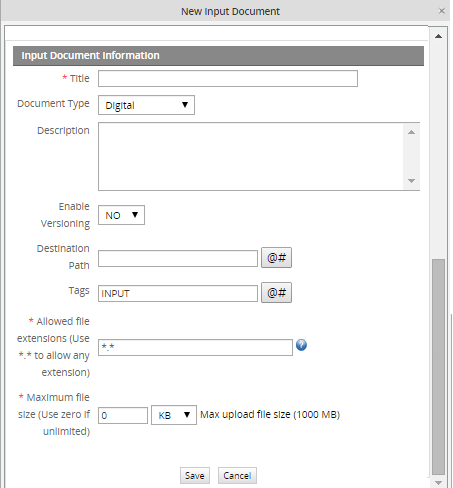
- Form to create a new Input Document PM 2.8
Define the following fields for the Input Document:
- Title: Enter a title to identify the Input Document.
- Document type: Select whether the document is digital, printed or can be both digital and printed. If a digital document, the user will asked to upload the document. If printed, the user will be added to provide a description of the document which is presumably exists in physical form.
- Description: Enter a description of the Input Document, which will help the user better understand its purpose and what type of document should be submitted.
- Enable Versioning: Check this option if needing to keep multiple versions of the Input Document. Versioning is useful if the same Input Document will be submitted multiple times over the course of a case or if needing to maintain an audit trail.
- Destination Path: A new option available in version 1.2-3306Beta on. Create the name of a folder where this Input Document will be placed in CASES > Documents. To use a variable in the folder name, click on the [@#] button to select a variable.
For example: Receipts_@#USR_USERNAME
To place the Input Document inside a subfolder inside other folders, enter a path to that folder, separating each folder with a / (forward slash).
For example: Receipts/@#USR_USERNAME/@#subject_@#date
To see a list of Input Documents, Output Documents and attached files found in each folder, go to CASES > Documents and click on the folder.
Note that the Destination Path does not effect where Input Documents are stored in the file system. Moreover, all files will be stored inside path where ProcessMaker has been installed, either a local computer or a Server. - Tags: Enter the name of the identifying tag(s), which will be associated with this Input Document. To specify more than one tag name, separate each tag name with commas. Click on the [@#] button to select a variable which will be used in the tag name.Tags result really useful when looking for Input Documents in the ProcessMaker database.
- Allowed file extensions: Available in version 2.8.0 and later. It is a required field which defines which file extensions are allowed to be uploaded as an Input Document. When uploading a file as an Input Document, ProcessMaker will verify that only files with the specified extension(s) are uploaded. The following format is used to defined allowed file extensions:
- *.* Allows any type of file.
- *.pdf, *.jpg, *.docx Specific types of files. In order to specify more than one type, separate them using commas.
Note: This feature can only be used to verify the file extension, not to specify the allowed filename of an Input Document. For example: Student_*.pdf does not validate that all Input Document filenames should start with "Student_".
Also, see the hint for help defining the extensions:
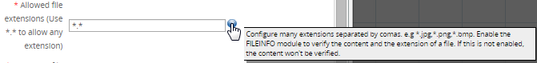
- In order to use this feature, the fileinfo extension must be enabled. This extension
not only verifies the extension of the file, but also ensures that the extension matches the file's
contents, so that the user cannot upload a dangerous file (for example, when an .exe file
has been renamed with the .jpg extension):

- Maximum file size: Available in version 2.8.0 and later. It is a required field which defines in KB or MB the maximum size of the file to be attached. If set to zero, then the file size is unlimited. Nevertheless, the limit is configured inside the php.ini file by the upload_max_size setting and that limit is shown in parenthesis when creating an Input Document.

-
And the maximum size defined for an Input Document is shown in brackets when running a case.
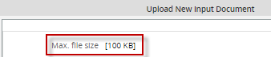
If the file uploaded is bigger than the size specified the following message is shown:
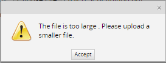
After filling out the fields for the new Input Document, click on Save.
Inserting Input Documents into the Process
After creating an input document, then decide where in the process the Input Document can be submitted. Remember that users have the option to upload multiple files for each Input Document.
If an Input Document may need to change over the course of a case, it may be a good idea to have multiple points in the process where the same Input Document can be submitted, so that new versions of the document can be submitted. If versioning is enabled, then each version will be preserved, allowing an auditor to see how the document changed over the course of the case.
As a Step
To insert an input document as a step inside a task, open the process and right click on a task. Select the Steps option from the dropdown menu. In the "Steps Of:" dialogue box which appears, go to the Steps tab and click on the New link. Select the Input Document from the list and click on the Select link. Once an Input Document is added to the list of steps for a task, the order which steps are executed can be changed by clicking on the Up and Down links.
In some cases, it may not make sense for the user to be asked to submit an Input Document. For example, a process asks users to submit receipts for purchases as Input Documents. If nothing was purchased in the case, then there is no reason to Input Document for the receipts. If an Input Document should not always be executed as a step, then a condition can be added. Only if the condition evaluates to "true", then the step will be executed and the user will be asked to submit an Input Document.
To add a condition to an input document, go to the Conditions tab in the "Steps Of:" dialogue box and click on the Edit link for the Input Document. Enter an condition which will evaluate to either "true" or "false". For more information, see Using Conditions.
In a DynaForm
It may be more convenient to directly upload a digital Input Document to a DynaForm, rather than have it execute as a separate step. For example, in a DynaForm where the user fills out information about a purchase, also have the user upload the receipt. From version 1.2-2425 on, it is possible to upload an Input Document to a file object in a DynaForm.
First create an Input Document, then go to a DynaForm and add a file field. When setting the properties for a file field, select the Input Document in the Input dropdown box. To force the user to always upload an Input Document, check the Required option.
Submitting Input Documents
When a case comes to an Input Document step, a form will appear prompting the user to submit the document.
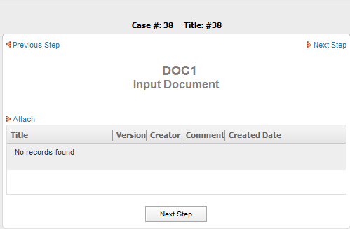
If it is a digital document, click on the Attach link and then browse for the file to upload. A comment about the Input Document can be added in the Comments field. Then click on Save to add the new Input Document.
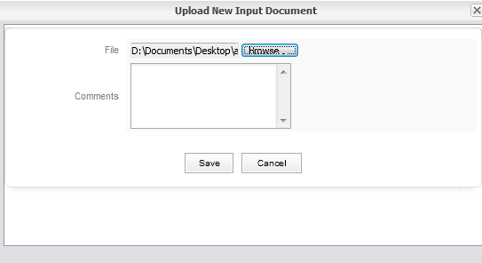
If it is a printed document, then enter a description of the document. Additional Input Documents can be added by clicking repeatedly on the Attach link. All the added input documents will be displayed in the list.
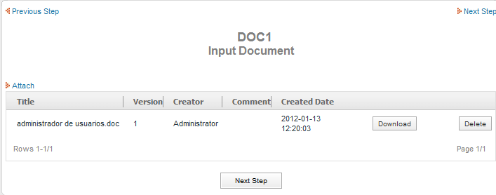
If versioning is enabled, new versions of an existing Input Document can be uploaded by clicking on the New Version link. To see a list of all the versions for an Input Document, click on its Version History link.
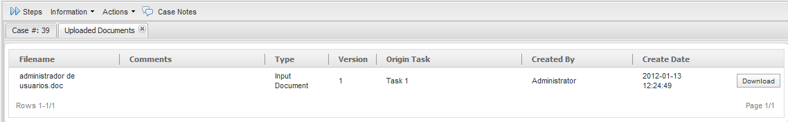
Note: When an Input Document file is deleted, its status in the APP_DOCUMENT table is changed to 'DELETED', but its record still exists in the database and its file remains in the ProcessMaker server's file system.
Accessing Input Documents
To view an Input Document for a particular case, go to the HOME menu and open the case. Remember that if the logged-in user is not the currently assigned user to work on the case, then Process Permissions will need to be granted so the user can view the case or the user will need to be assigned as a Process Supervisor and configured for read/write access to the Input Document.
Once the case is open, click on the Information submenu at the top and then click on the Uploaded Documents button in the sidebar.
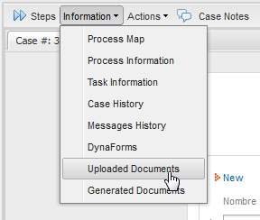
A dialog box will appear with a list of the Input Documents and attached files for the case. To view a document, click on its Download link on the right hand side, so it can be downloaded and opened on the local computer.
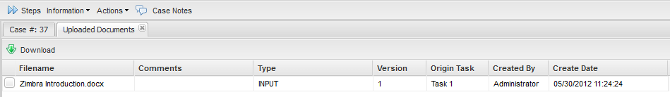
On the other hand, uploaded documents can be seen by going to HOME and at the end of the left menu the option Documents will display, all documents uploaded or generated will be placed there:
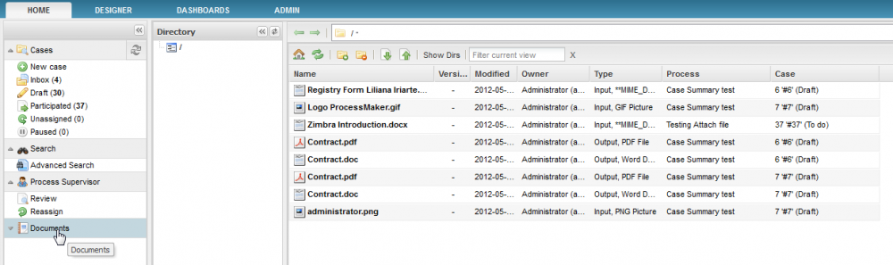
Input Document Storage
Information about Input Document files and any other files uploaded while running cases is stored in the wf_<WORKSPACE>.APP_DOCUMENT table. The filename for Input Document files is stored in the wf_<WORKSPACE>.CONTENT table where the CON_CATEGORY field equals 'APP_DOC_FILENAME'.
To search for all the Input Document files for a particular case, first find the case's unique ID and then use it in the following SQL query:
AND D.APP_UID = 'XXXXXXXXXXXXXXXXXXXXXXXXXXXXXXXX'
When an Input Document file is uploaded while running a case, it is stored in the file system of the ProcessMaker server. It is renamed with its unique ID, but it retains its original extension.
Input Document files before version 2.5.1 are stored in the file system of the server at:
<INSTALL-DIRECTORY>/shared/<WORKSPACE>/files/<CASE-UID>/<CASE-DOCUMENT-UID>_<VERSION>.<EXTENSION>
Even if versioning isn't enabled, a version number of "_1" is added to the filename.
Input Document files are generally found at the following locations:
Linux/UNIX:
/opt/processmaker/shared/sites/<WORKSPACE>/files/<CASE-UID>/<CASE-DOCUMENT-UID>_<VERSION>.<EXTENSION>
Windows: <INSTALL-DIRECTORY>\shared\sites\<WORKSPACE>\files\<CASE-UID>\<CASE-DOCUMENT-UID>_<VERSION>.<EXTENSION>
For example, if the Input Document “invoice.pdf” gets assigned the unique ID “1750921524b5d19ec1f1ed1007166182” and is uploaded in the case “4265676974b5d19ce105ac3093028259”, then the document might be found in Linux at: /opt/processmaker/shared/sites/workflow/files/4265676974b5d19ce105ac3093028259/1750921524b5d19ec1f1ed1007166182_1.pdf
In version 2.5.1 and later, an option was added to allow case files to be stored in a series of 3 subdirectories created from the case's unique ID to avoid the 32K file limits of Linux's ext3 file system. In version 3.0 and later, this option is activated by default. Use the G::getPathFromUID() method to get the correct path, which may or may not be in subdirectories.
In a trigger, the path to an Input Document file can be determined using the defined constants PATH_DOCUMENT (which would contain a path such as "/opt/processmaker/shared/sites/workflow/files/") and PATH_SEP (which is '/' or '\') and the system variable @@APPLICATION for the unique ID:
$g = new G();
$caseIdPath = method_exists(G, "getPathFromUID") ? $g->getPathFromUID($caseId) : $caseId;
$inputDocPath = PATH_DOCUMENT . $caseIdPath . PATH_SEP . "<CASE-DOCUMENT-UID>_<VERSION>.<EXTENSION>";
Note: The code method_exists(G, "getPathFromUID") checks whether the G::getPathFromUID() method exists, before calling it, so this code will not have problems in version 2.5.0 and earlier, which didn't have the G::getPathFromUID() method.
The <CASE-DOCUMENT-UID>, <VERSION>, and <EXTENSION> need to be looked up with database queries in the wf_<WORKSPACE>.APP_DOCUMENT table or by using the inputDocumentList() web service.
Changing the File Location
If needing to store Input and Output Document files in a different location, such as a NAS, then copy the contents of the files directory to the new location and then edit the source code in workflow/public_html/sysGeneric.php and change the location of PATH_DOCUMENT, which is defined at line 332:
Warning: Do not make any other changes to the sysGeneric.php file, or functionality will break. ProcessMaker does not recommend changing ProcessMaker core files. Proceed at your own risk.
For example, to store files at a NAS mounted drive at /media/nas/processmaker:
Make sure to include the forward slash in Linux/UNIX or the backward slash in Windows at the end of the path.
Input Documents in Triggers
It is possible to create triggers to manipulate Input Documents files. See the examples listed below.
Note: In version 2.5.2 and later, when a trigger is assigned to be executed after an Input Document step, the trigger is executed before the file is saved and processed. In previous versions, the trigger was executed after an input document file was uploaded and stored in the database. If no file was uploaded, then the trigger wasn't executed.
Once the UID for the Input Document definition is known, then the following code can be used in a trigger to look up the unique ID for the first Input Document which has been uploaded to the current case:
$case = @@APPLICATION; //UID for the current case
$query = "SELECT APP_DOC_UID FROM APP_DOCUMENT WHERE APP_UID='$case' AND DOC_UID='$docDef'";
$result = executeQuery($query);
//check if document found:
if (is_array($result) and count($result) > 0) {
@@DocUid = $result[1]['APP_DOC_UID'];
}
else {
@@DocUid = '';
}
To create an array of the unique IDs of all the Input Documents files for the current case:
$docDef = '13027240856a7f04516b3e1011191907';
$case = @@APPLICATION; //UID for the current case
@=DocUids = array();
$query = "SELECT APP_DOC_UID FROM APP_DOCUMENT WHERE APP_UID='$case' AND DOC_UID='$docDef' ";
$result = executeQuery($query);
if (is_array($result) and count($result) > 0) { //check if document found
foreach($result as $doc) {
@=DocUids[] = $doc['APP_DOC_UID'];
}
}
Once the unique ID for the case, the unique ID for the Input Document file, its version number, and its original file extension is known, then the file can be opened with PHP's file_get_contents() or file() function.
Opening Input Document files in Triggers
To open a digital Input Document file which has been uploaded to a case, it is first necessary to obtain the Unique ID for the Input Document definition. This UID can be found in a number of ways:In version 1.2-2985 or later, open the list of Input Documents for a process and clicking on a document's UID link. Before version 2.0, run a case and examine the URL in the web browser when arriving at the step for the Input Document. Examine the wf_<WORKSPACE>.INPUT_DOCUMENT.INP_DOC_UID field in the database. Examine the wf_<WORKSPACE>.CONTENT.CON_ID field while searching for CON_CATEGORY='INP_DOC_TITLE' AND CON_VALUE='input document title'
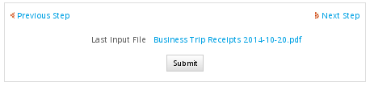
Opening after Uploading to a File Field
If an Input Document file has been uploaded to a file field in a DynaForm, then Input Document file can be opened using the case variable created by the file field. For instance, if a DynaForm has a file field named "Invoice" which is associated with an Input Document, then the following code in a subsequent trigger could access the file:
$invoiceFile = @@Invoice;
$caseId = @@APPLICATION;
$query = "SELECT AD.APP_DOC_UID, AD.DOC_VERSION FROM CONTENT C, APP_DOCUMENT AD " .
"WHERE C.CON_VALUE = '$invoiceFile' AND AD.APP_DOC_UID = C.CON_ID AND AD.APP_UID = '$caseId'";
$result = executeQuery($query);
if (is_array($result) and count($result) > 0) {
$g = new G();
$caseIdPath = method_exists(G, "getPathFromUID") ? $g->getPathFromUID($caseId) : $caseId;
$path = PATH_DOCUMENT . $caseIdPath . PATH_SEP . $result[1]['APP_DOC_UID'] . '_' .
$result[1]['DOC_VERSION'] . '.' . pathinfo($invoiceFile, PATHINFO_EXTENSION);
$invoiceContents = file_get_contents($path);
if ($invoiceContents != FALSE) {
/* process contents of file */
}
}
Opening from a Database Query
An Input Document file from any case can be opened with information obtained by querying the wf_<WORKSPACE>.APP_DOCUMENT and wf_<WORKSPACE>.CONTENT tables.
For instance, to open all Input Document files which were uploaded by the current user in the last 30 days for the current process and replace the string "%%DUE_DATE%%" with today's date in all the files:
$processId = @@PROCESS;
$userId = @@USER_LOGGED;
$find = '%%DUE_DATE%%';
$today = date("d-m-Y"); //Today's date in a format like "12-31-2012"
$monthAgo = date('Y-m-d', strtotime("-1 month")); //date 1 month ago, formatted like "2012-12-31"
$query = "SELECT AD.APP_DOC_UID, AD.DOC_VERSION, CON_VALUE AS FILENAME
FROM CONTENT C, APP_DOCUMENT AD, APPLICATION A
WHERE AD.USR_UID='$userId' AND AD.APP_DOC_CREATE_DATE >= '$monthAgo' AND
AD.APP_UID=A.APP_UID AND A.PRO_UID='$processId'";
$result = executeQuery($query);
if (is_array($result) and count($result) > 0) {
foreach ($result as $doc) {
$g = new G();
$caseIdPath = method_exists(G, "getPathFromUID") ? $g->getPathFromUID($caseId) : $caseId;
$path = PATH_DOCUMENT . $caseIdPath . PATH_SEP . $doc['APP_DOC_UID'] . '_' .
$doc['DOC_VERSION'] . '.' . pathinfo($invoiceFile, $doc['FILENAME']);
$fileContents = file_get_contents($path) or
die("Error: Unable to open file '$path'!\n");
//if file contains $find, then replace it:
if (strpos($fileContents, $find) !== false) {
$fileContents = str_replace($find, $today, $fileContents); //replace date
file_put_contents($path, $fileContents) or
die("Error: Unable to write to file '$path'!\n");
}
}
}
Links to Input Documents
An Input Document (and its list of files) which has been assigned as a step in a task, can be viewed with the following URL:
http://<IP-ADDRESS>/sys<WORKSPACE>/<LANG>/<SKIN>/cases/cases_Step?TYPE=INPUT_DOCUMENT&UID=<STEP-UID>&POSITION=<STEP-NUMBER>&ACTION=VIEW
To open an Input Document so that files can be added and deleted, use the following URL:
http://<IP-ADDRESS>/sys<WORKSPACE>/<LANG>/<SKIN>/cases/cases_Step?TYPE=INPUT_DOCUMENT&UID=<STEP-UID>&POSITION=<STEP-NUMBER>&ACTION=ATTACH
The <STEP-UID> is the unique ID for the step and the <POSITION> is the positive integer for the step in the task, which starts counting from 1. These values can be found by going to ADMIN > Web Services and clicking on the [test] link for the taskList() and taskCase() web services. Alternatively, the UID can be looked up in the wf_<WORKSPACE>.CONTENT table and POSITION can be looked up in the wf_<WORKSPACE>.STEP.STEP_POSITION field. The easiest way to find the right URL is to turn on Time Logging and run a case while looking at the output in the log file.
For example, to open an Input Document with the UID "7388202124f0e1384e1ad89013210097" for viewing which is the second step in a task:
http://example.com/sysworkflow/en/classic/cases/cases_Step?TYPE=INPUT_DOCUMENT&UID=7388202124f0e1384e1ad89013210097&POSITION=2&ACTION=VIEW
If this URL is entered in a web browser without an open session of ProcessMaker, then the user will be redirected to the login screen before opening the Input Document. Remember that the logged-in user will not be able to access the Input Document and its files if he/she doesn't have rights to open the case. The user needs to be the designated user to work on the current task in the case. Otherwise, the user will need to have been assigned Process Permissions to view the Input Document and/or be a Process Supervisor to change the files in the Input Document.
Links to Input Document Files
Each Input Document can contain a variable number of files. Input Documents files (or attached files) can be accessed with the URL:
http://<IP-ADDRESS>/sys<WORKSPACE>/<LANG>/<SKIN>/cases/cases_ShowDocument?a=<CASE-DOCUMENT-UID>
For example:
http://mycompany.com/sysworkflow/en/classic/cases/cases_ShowDocument?a=4699401854d8262f569e9a1070221206
If versioning has been enabled, the version number (which starts counting from the number 1) can also be included in the URL:
http://<IP-ADDRESS>/sys<WORKSPACE>/<LANG>/<SKIN>/cases/cases_ShowDocument?a=<CASE-DOCUMENT-UID>&v=<VERSION-NO>
Searching for Input Documents
If using an external application or script, the unique ID for the case document can be found with the inputDocumentList() web service. Inside a trigger or a DynaForm, the unique IDs for input document files can be looked up with the following SQL query:
To find the Input Document files for a specified case:
APP_DOC_TYPE='INPUT' AND APP_DOC_STATUS='ACTIVE'
To find the files for a specified Input Document and specified case, which was uploaded by a specified user:
DOC_UID='<INPUT_DOC_UID>' AND USR_UID='<USER_UID>' AND
APP_DOC_TYPE='INPUT' AND APP_DOC_STATUS='ACTIVE'
Input Documents can be marked by tags, which provide an easy way to find related Input Documents under HOME > Documents. The tags are stored in the wf_<WORKSPACE>.APP_DOCUMENT.APP_DOC_TAGS field for each Input Document file and multiple tags are separated by commas. To find all Input Document files for a case with a specified tag:
APP_DOC_STATUS='ACTIVE' AND APP_DOC_TAGS LIKE '%<TAG>%'
To find all Input Document files created between a certain date range:
APP_DOC_CREATE_DATE >= '<YYYY-MM-DD HH:MM:SS>' AND APP_DOC_CREATE_DATE <= '<YYYY-MM-DD HH:MM:SS>'
To find both the UID of the case document and its original filename, query the CONTENT table:
WHERE AD.APP_DOC_TYPE='ATTACHED' AND AD.APP_DOC_STATUS='ACTIVE' AND
AD.APP_DOC_UID=C.CON_ID AND C.CON_CATEGORY='APP_DOC_FILENAME' AND C.CON_VALUE<>''
To find the UID of the case document and the comment entered when the file was uploaded, query the CONTENT table:
WHERE AD.APP_DOC_TYPE='INPUT' AND AD.APP_DOC_STATUS='ACTIVE' AND
AD.APP_DOC_UID=C.CON_ID AND C.CON_CATEGORY='APP_DOC_COMMENT' AND C.CON_VALUE<>''
Remember that multiple files can be uploaded to an Input Document, so queries may return multiple records. If reading the result of a query in a trigger, then write code to loop through all the returned records in the result.
If the Input Document is configured to allow multiple versions of the same Input Document file, then also look for the record with the highest positive integer in the wf_<WORKSPACE>.APP_DOCUMENT.DOC_VERSION field. (The counting starts from the number 1.)
To find the most recent version(s) of input document file(s) for a specified case:
DOC_UID='<INPUT_DOC_UID>' AND APP_DOC_TYPE='INPUT' AND APP_DOC_STATUS='ACTIVE'
AND DOC_VERSION = (SELECT MAX(DOC_VERSION) FROM APP_DOCUMENT WHERE APP_UID='<CASE-UID>' AND
DOC_UID='<INPUT_DOC_UID>' AND APP_DOC_TYPE='INPUT' AND APP_DOC_STATUS='ACTIVE')
Link to an Input Document file in a DynaForm
To insert a link to a single Input Document file inside a DynaForm, create a trigger which uses executeQuery() to look up the unique ID for the uploaded file in the wf_<WORKSPACE>.APP_DOCUMENT.APP_DOC_UID field. Then, the filename can be found in the wf_<WORKSPACE>.CONTENT.CON_VALUE field, by searching the file's unique ID in the wf_<WORKSPACE>.CONTENT.CON_ID field and when CONTENT.CON_CATEGORY='APP_DOC_FILENAME'. Use the file's unique ID to construct the URL to access the document and assign that URL to a case variable which can be passed to the DynaForm holding the link field. Also assign the filename to another case variable which can be passed to the DynaForm.
Before version 2.5.0, the only way to set the URL and label of link fields was to create two hidden fields in the DynaForm and set the values of those two hidden fields to the filename of the file and the URL to download the file. Then use JavaScript to read the value of the two hidden fields when the DynaForm loads and assign the URL and label to the link.
In version 2.5.0 and later, it isn't necessary to create two hidden fields and use JavaScript to set the URL and label of the link field. Instead, the link field can automatically be set to the URL of the Input Document file and display its label by creating two case variables named @@link-field-name and @@link-field-name_label.
Example before version 2.5.0
This example displays a link in a DynaForm to the last Input Document file which was uploaded for the current case. First, create the following trigger which looks up the last uploaded file and constructs a URL to access that file. The URL and the filename for the Input Document file are inserted in two case variables named @@inputFileUrl and @@inputFileName:
$query = "SELECT C.CON_ID AS fileId, C.CON_VALUE AS filename
FROM APP_DOCUMENT AD, CONTENT C
WHERE AD.APP_UID='$caseId' AND AD.APP_DOC_TYPE='INPUT' AND AD.APP_DOC_STATUS='ACTIVE' AND
AD.APP_DOC_UID=C.CON_ID AND C.CON_CATEGORY='APP_DOC_FILENAME' AND C.CON_VALUE<>''
ORDER BY AD.APP_DOC_CREATE_DATE DESC";
$result = executeQuery($query);
if (is_array($result) and count($result) > 0) {
//Relative URL to download Input Document file inside ProcesMaker:
@@inputFileUrl = '../cases/cases_ShowDocument?a=' . $result[1]['fileId'];
@@inputFileName = $result[1]['filename'];
}
Then, create a DynaForm which has link file named "inputFile" to allow the user to download the Input document file, plus two hidden files named "inputFileUrl" and "inputFileName" to hold the values set by the two case variables created in the trigger. Then add the following JavaScript code to the DynaForm, which will set the URL and label for the link when the DynaForm loads:
getField("inputFile").href = getField("inputFileUrl").value;
getField("inputFile").innerHTML = getField("inputFileName").value;
};
When the DynaForm is displayed when running a case, the link field will show the filename of the Input Document file and will open or download the file (depending on the file type and browser configuration) when clicked. To make the Input Document file open in a separate window, set its Target property to "Blank" in ProcessMaker 2.0. In older versions of ProcessMaker, use this JavaScript code:
Here is the XML code for the DynaForm:
<dynaForm type="xmlform" name="329976887547cb0b0167371011961670/900138072547cb0c5a6d413013281685" width="500"
enabletemplate="0" mode="" nextstepsave="prompt">
<inputFile type="link" target_sel="_blank" target="_blank" required="0" readonly="0" optgroup="0">
<en>Last Input File</en>
</inputFile>
<inputFileUrl type="hidden" mode="edit" required="0" readonly="0" optgroup="0"/>
<inputFileName type="hidden" mode="edit" required="0" readonly="0" optgroup="0"/>
<submit type="submit" required="0" readonly="0" optgroup="0">
<en>Submit</en>
</submit>
<populateLink type="javascript" meta=""><![CDATA[var dynaformOnload = function() {
getField("inputFile").href = getField("inputFileUrl").value;
getField("inputFile").innerHTML = getField("inputFileName").value;
};]]></populateLink>
</dynaForm>
Finally, set the above trigger to fire before the DynaForm containing the link field. When a case is run, the link field will display the filename of the last uploaded Input Document file and when clicked, it will open or download the file.
Additional Information about the Input Document file
To display additional information in the DynaForm about the Input Document file, such as the name of the user who uploaded the Input Document file, the date-time when uploaded and the comment about the file, add read-only "uploader", "dateUploaded" and "comment" fields to the DynaForm.
Here is the XML code for the DynaForm:
<dynaForm type="xmlform" name="329976887547cb0b0167371011961670/900138072547cb0c5a6d413013281685"
width="500" enabletemplate="0" mode="" nextstepsave="prompt">
<inputFile type="link" target_sel="_blank" target="_blank" required="0" readonly="0" optgroup="0">
<en>Last Input File</en>
</inputFile>
<uploader type="text" maxlength="64" validate="Any" required="0" readonly="0" size="15" mode="view" optgroup="0">
<en>Uploaded by</en>
</uploader>
<dateUploaded type="text" maxlength="64" validate="Any" required="0" readonly="0" size="15" mode="view" optgroup="0">
<en>When Uploaded</en>
</dateUploaded>
<comment type="textarea" required="0" readonly="0" rows="2" cols="32" mode="view" optgroup="0">
<en>Comment</en>
</comment>
<inputFileUrl type="hidden" mode="edit" required="0" readonly="0" optgroup="0"/>
<inputFileName type="hidden" mode="edit" required="0" readonly="0" optgroup="0"/>
<submit type="submit" required="0" readonly="0" optgroup="0">
<en>Submit</en>
</submit>
<populateLink type="javascript" meta=""><![CDATA[var dynaformOnload = function() {
getField("inputFile").href = getField("inputFileUrl").value;
getField("inputFile").innerHTML = getField("inputFileName").value;
};]]></populateLink>
</dynaForm>
Then, use the following trigger code, to look up this additional information and assign it to the @@uploader, @@dateUploaded and @@comment case variables, which will be displayed in the DynaForm:
$query = "SELECT C.CON_ID AS fileId, C.CON_VALUE AS filename,
AD.APP_DOC_CREATE_DATE AS dateUploaded, AD.USR_UID AS uploaderId
FROM APP_DOCUMENT AD, CONTENT C
WHERE AD.APP_UID='$caseId' AND AD.APP_DOC_TYPE='INPUT' AND AD.APP_DOC_STATUS='ACTIVE'
AND AD.APP_DOC_UID=C.CON_ID AND C.CON_CATEGORY='APP_DOC_FILENAME' AND C.CON_VALUE<>''
ORDER BY AD.APP_DOC_CREATE_DATE DESC";
$files = executeQuery($query);
if (is_array($files) and count($files) > 0) {
@@inputFileUrl = '../cases/cases_ShowDocument?a=' . $files[1]['fileId'];
@@inputFileName = $files[1]['filename'];
@@dateUploaded = $files[1]['dateUploaded'];
//lookup first and last name of user who uploaded file:
$aUser = userInfo($files[1]['uploaderId']);
@@uploader = $aUser['firstname'] . " " . $aUser['lastname'];
//lookup comment for Input Document file:
$file = executeQuery("SELECT CON_VALUE FROM CONTENT WHERE CON_ID='{$files[1]['fileId']}'
AND CON_CATEGORY='APP_DOC_COMMENT'");
if (is_array($file) and count($file) > 0) {
@@comment = $file[1]['CON_VALUE'];
}
}
Set the above trigger to fire before the DynaForm. When a case is run, the DynaForm will display not only a link to download the Input Document file, but also the name of user who uploaded the file, when it was uploaded and any comment about the file:
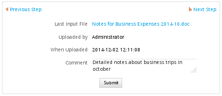
Example for version 2.5.0 and later
The previous example will work in version 2.5.0 and later, but it is much easier to use the case variables @@link-field-name and @@link-field-name_label to set the URL and label of a link field in a DynaForm.
First, create the following trigger which looks up the last uploaded file and constructs a URL to access that file. The URL and the filename for the Input Document file are inserted in two case variables named @@inputFile and @@inputFile_label:
$query = "SELECT C.CON_ID AS fileId, C.CON_VALUE AS filename
FROM APP_DOCUMENT AD, CONTENT C
WHERE AD.APP_UID='$caseId' AND AD.APP_DOC_TYPE='INPUT' AND AD.APP_DOC_STATUS='ACTIVE' AND
AD.APP_DOC_UID=C.CON_ID AND C.CON_CATEGORY='APP_DOC_FILENAME' AND C.CON_VALUE<>''
ORDER BY AD.APP_DOC_CREATE_DATE DESC";
$result = executeQuery($query);
if (is_array($result) and count($result) > 0) {
//Relative URL to download Input Document file inside ProcesMaker:
@@inputFile = '../cases/cases_ShowDocument?a=' . $result[1]['fileId'];
@@inputFile_label = $result[1]['filename'];
}
Then, create a DynaForm which has link file named "inputFile" to allow the user to download the Input document file. When the DynaForm is displayed when running a case, the link field will show the filename of the Input Document file and will open or download the file (depending on the file type and browser configuration) when clicked.
Here is the XML code for the DynaForm:
<dynaForm type="xmlform" name="329976887547cb0b0167371011961670/900138072547cb0c5a6d413013281685" width="500"
enabletemplate="0" mode="" nextstepsave="prompt">
<inputFile type="link" target_sel="_blank" target="_blank" required="0" readonly="0" optgroup="0">
<en>Last Input File</en>
</inputFile>
<submit type="submit" required="0" readonly="0" optgroup="0">
<en>Submit</en>
</submit>
</dynaForm>
Finally, set the above trigger to fire before the DynaForm containing the link field. When a case is run, the link field will display the filename of the last uploaded Input Document file and when clicked, it will open or download the file.
Displaying Input Document images in DynaForms
Input Documents files which are images can be displayed inside of DynaForms. Displaying an image is similar to displaying a link, but the URL is set as the source for the image.
First, create a trigger which fires before a DynaForm which creates the URL to access the image file and pass it to a hidden field in the DynaForm. For example:
$inputDocId = 'XXXXXXXXXXXXXXXXX'; //look up Input Document UID
$query = "SELECT APP_DOC_UID FROM APP_DOCUMENT WHERE APP_UID='$caseId' AND
DOC_UID='$inputDocId' AND APP_DOC_TYPE='INPUT' AND APP_DOC_STATUS='ACTIVE'";
$result = executeQuery($query);
if (is_array($result) and count($result) > 0) {
@@inputFileURL = '../cases/cases_ShowDocument?a=' . $result[1]['APP_DOC_UID'];
}
Then, insert an <img> tag inside the HTML code for the Dynaform. DynaForms are laid out inside an HTML table, so add a new row to the DynaForm and place the <img> tag inside a table cell. Give the <img> tag an id so it can be easily accessed with JavaScript. For example:
Warning: Editing the HTML code prevents later editing of the DynaForm (especially adding and moving fields), so only edit the HTML as the last step in creating the DynaForm. To avoid this problem, use JavaScript to dynamically insert the new row, cell and image in the table.
Finally, create the hidden field named "inputFileURL" in the DynaForm to hold the URL to the image file and add JavaScript to set that URL as the src for the image. Use the getElementById() function to reference the <img> tag:
Displaying other types of Input Documents in DynaForms
Input Document files in formats such as DOC, PDF, XLS, and ODT require plugins to be displayed inside web browsers, so they can not be easily incorporated into DynaForms.Workarounds exist, but they require additional programs and special configuration.
A simpler solution is to provide a link to open these types of documents inside another browser window. In ProcessMaker version 2.0 and later, set the Target property of the link to "Blank" to open in a new window. In prior versions of ProcessMaker, use javascript to set the target property:
If a plugin is installed to display the file, it will be displayed inside the browser window; otherwise, the file can be downloaded and opened with an external program.
If the Input Document file needs to be displayed inside a DynaForm, an iframe can be used to display the file, but make sure that a plugin is installed in the web browser to handle the file. Edit the HTML code for the DynaForm and place the iframe inside a new row in the table for the DynaForm:
Warning: Editing the HTML code prevents later editing of the DynaForm (especially adding and moving fields), so only edit the HTML as the last step in creating the DynaForm. To avoid this problem, use JavaScript to dynamically insert the new row, cell and iframe in the table.
Use a similar trigger as the one above to create the URL to access the Input Document file. Create a hidden field named "inputFileURL" in the DynaForm to hold the URL to the Input Document file and add JavaScript to set that URL as the src for the iframe. Use the getElementById() function to reference the iframe:
Links to multiple Input Document files in DynaForms
Input Documents can hold multiple files (unless the Input Document is uploaded through a file field in a DynaForm which is only displayed once). A trigger can be used to retrieve the list of Input Document files from the ProcessMaker database and place them in a grid case variable, which can be displayed in a subsequent DynaForm. Remember that grids are stored as an associative array of associative arrays, where the outer array is numbered starting from 1 for each row in the grid and the name of each field in the grid is a key in the inner array. See: Accessing Grids with PHP.
For example, the following trigger looks up all the Input Document files uploaded for the current case in the ProcessMaker database. This information is placed in a grid named "InputFilesGrid" with a read-only textbox field named "filename" and a link field named "url".
$query = "SELECT C.CON_VALUE AS filename, CONCAT('../cases/cases_ShowDocument?a=', C.CON_ID) AS url
FROM APP_DOCUMENT AD, CONTENT C
WHERE AD.APP_UID='$caseId' AND AD.APP_DOC_TYPE='INPUT' AND AD.APP_DOC_STATUS='ACTIVE'
AND AD.APP_DOC_UID=C.CON_ID AND C.CON_CATEGORY='APP_DOC_FILENAME' AND C.CON_VALUE<>''";
$result = executeQuery($query);
if (is_array($result) and count($result) > 0) {
@=InputFilesGrid = $result;
}
The above trigger is set to fire before the DynaForm which contains an embedded grid whose field name is "InputFilesGrid". Note that the fields that are returned by the database query are renamed as "filename" and "url" to match the field names in the grid and the result of the database query is assigned to a case variable which has the same name as the field which holds the embedded grid in the master DynaForm.
If a case is run where two files are uploaded in the Input Document step:

Then, the following grid will appear in the subsequent DynaForm, which displays the filename and the URL to download it:
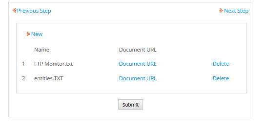
To display additional information about the Input Document files, such as who uploaded the file, when it was uploaded and the comments, then add the "uploader", "dateUploaded" and "comments" fields to the grid. Then use the following trigger code look up this additional information:
$caseId = @@APPLICATION;
$query = "SELECT C.CON_ID AS fileId, C.CON_VALUE AS filename,
CONCAT('../cases/cases_ShowDocument?a=', C.CON_ID) AS url,
AD.APP_DOC_CREATE_DATE AS dateUploaded, AD.USR_UID AS uploaderId
FROM APP_DOCUMENT AD, CONTENT C
WHERE AD.APP_UID='$caseId' AND AD.APP_DOC_TYPE='INPUT' AND AD.APP_DOC_STATUS='ACTIVE'
AND AD.APP_DOC_UID=C.CON_ID AND C.CON_CATEGORY='APP_DOC_FILENAME' AND C.CON_VALUE<>''";
$files = executeQuery($query);
if (is_array($files) and count($files) > 0) {
for ($i = 1; $i <= count($files); $i++) {
//lookup first and last name of user who uploaded file:
$aUser = userInfo($files[$i]['uploaderId']);
$files[$i]['uploader'] = $aUser['firstname'] . " " . $aUser['lastname'];
//lookup comment for Input Document file:
$file = executeQuery("SELECT CON_VALUE FROM CONTENT WHERE CON_ID='{$files[$i]['fileId']}'
AND CON_CATEGORY='APP_DOC_COMMENT'");
if (is_array($file) and count($file) > 0)
$files[$i]['comment'] = $file[1]['CON_VALUE'];
else
$files[$i]['comment'] = '';
}
@=InputFilesGrid = $files;
}
The XML definition of the grid DynaForm which displays the details about the files:
<dynaForm type="grid" name="346659768547365f6457a09054774264/4881271115478af73178568035136222" width="500"
enabletemplate="0" mode="" nextstepsave="prompt">
<filename type="text" maxlength="64" validate="Any" required="0" readonly="0" size="15" mode="view" optgroup="0">
<en>Filename</en>
</filename>
<url type="link" target_sel="_blank" target="_blank" required="0" readonly="0" optgroup="0">
<en>Download</en>
</url>
<uploader type="text" maxlength="64" validate="Any" required="0" readonly="0" size="15" mode="view" optgroup="0">
<en>Uploader</en>
</uploader>
<dateUploaded type="text" maxlength="64" validate="Any" required="0" readonly="0" size="15" mode="view" optgroup="0">
<en>Date uploaded</en>
</dateUploaded>
<comment type="textarea" required="0" readonly="0" rows="2" cols="32" mode="view" optgroup="0">
<en>Comment</en>
</comment>
</dynaForm>
The XML definition of the master DynaForm which contains the field named "InputFilesGrid" which holds the embedded grid:
<dynaForm name="346659768547365f6457a09054774264/3765933975478af4de67163065867525" enabletemplate="0" type="xmlform"
width="800" mode="" nextstepsave="prompt" printdynaform="" adjustgridswidth="">
<InputFilesGrid type="grid" xmlgrid="346659768547365f6457a09054774264/4881271115478af73178568035136222"
addrow="0" deleterow="0" required="0" readonly="0" optgroup="0"/>
<submit type="submit" required="0" readonly="0" optgroup="0">
<en>Submit</en>
</submit>
</dynaForm>
When a case is run which uploads three files in an Input Document step:

The subsequent DynaForm with an embedded grid will show the details of the three files:
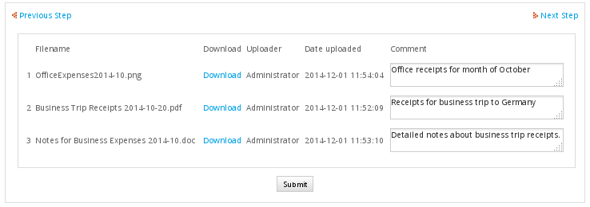
Note: The "filename" and "url" fields in the grid can be combined into a single link field whose label displays the filename, but it requires using JavaScript in the DynaForm to set the labels to the link fields before version 2.5.0 or creating "url" and "url_label" keys in the array in version 2.5.0 and later. See: Accessing Links with Triggers.
Links to Input Document files in Emails & Output Documents
Inserting links to Input Documents in email notifications and Output Documents involves creating a template containing a URL constructed with inserted variables. If the template is used in an email, then send the email with the PMFSendMessage() function. If used in an Output Document, then fire the trigger before the Output Document step in order to create the case variables which will be inserted in the Output Document.
For example, Acme Inc. has the following template file named "accessInvoice.html" to send out an email to one of its employees:
Account No: @#AccountNo
Filename: @#InvoiceFilename
Link: http://acme.com/sys@#SYS_SYS/@#SYS_LANG/@#SYS_SKIN/cases/cases_ShowDocument?a=@#InvoiceFileId
Date: @#InvoiceDate
Description: @#InvoiceDescription
The following trigger is used to look up the filename and unique ID for the Input Document file and send it out using PMFSendMessage():
$query = "SELECT C.CON_VALUE AS FILE_NAME, C.CON_ID AS FILE_UID,
AD.APP_DOC_CREATE_DATE AS FILE_DATE FROM APP_DOCUMENT AD, CONTENT C
WHERE AD.APP_UID='$caseId' AND AD.APP_DOC_TYPE='INPUT' AND AD.APP_DOC_STATUS='ACTIVE'
AND AD.APP_DOC_UID=C.CON_ID AND C.CON_CATEGORY='APP_DOC_FILENAME' AND C.CON_VALUE<>''";
$result = executeQuery($query);
if (is_array($result) and count($result) > 0) {
$aFields = array(
'InvoiceFilename' => $result[1]['FILE_NAME'],
'InvoiceFileId' => $result[1]['FILE_UID'],
'InvoiceDate' => $result[1]['FILE_DATE']
);
PMFSendMessage(@@APPLICATION, 'boss@acme.com', 'employee@acme.com', '', '',
'New Invoice to Download', 'accessInvoice', $aFields);
}
Multiple Input Document files in Emails & Output Documents
Inserting links to multiple Input Documents files in email notifications and Output Documents involves creating a template which contains a grid. Grids fields should be enclosed inside @>grid-name ... @<grid-name tags and will be repeated for as many records as are found in the grid. For more information, see Grids in Output_documents.
For example, the following Output Document template is used to generate a table of Input Document files:
The following trigger is fired before the Output Document is generated to populate the @=InputDocList array used in the template. It uses executeQuery() to lookup the unique IDs, creation dates, users and filenames for the Input Document files. executeQuery() returns an associative array of associative arrays which is the same format as used by grids. Then, the trigger loops through the records in that associative array and looks up the comment for each file in the CONTENT table and the name of the user who uploaded each file and inserts that information into the @=InputDocList array:
$caseId = @@APPLICATION;
$query = "SELECT C.CON_VALUE AS InvoiceFilename, C.CON_ID AS InvoiceId,
AD.APP_DOC_CREATE_DATE AS InvoiceDate, AD.USR_UID AS InvoiceUserId
FROM APP_DOCUMENT AD, CONTENT C
WHERE AD.APP_UID='$caseId' AND AD.APP_DOC_TYPE='INPUT' AND AD.APP_DOC_STATUS='ACTIVE'
AND AD.APP_DOC_UID=C.CON_ID AND C.CON_CATEGORY='APP_DOC_FILENAME' AND C.CON_VALUE<>''";
$files = executeQuery($query);
if (!is_array($files) or count($files) == 0) {
die("Unable to find any Input Documents.");
}
for ($i = 1; $i <= count($files); $i++) {
//Create Link to Input Document file:
$files[$i]['InvoiceLink'] = 'http://' . $_SERVER['HTTP_HOST'] . '/sys' . @@SYS_SYS . '/' .
@@SYS_LANG . '/' . @@SYS_SKIN . '/cases/cases_ShowDocument?a=' . $files[$i]['InvoiceId'];
//lookup first and last name of user who uploaded file:
$aUser = userInfo($files[$i]['InvoiceUserId']);
$files[$i]['InvoiceUser'] = $aUser['firstname'] . " " . $aUser['lastname'];
//lookup comment for Input Document file:
$file = executeQuery("SELECT CON_VALUE FROM CONTENT WHERE CON_ID='{$files[$i]['InvoiceId']}'
AND CON_CATEGORY='APP_DOC_COMMENT'");
if (is_array($file) and count($file) > 0)
$files[$i]['InvoiceComment'] = $file[1]['CON_VALUE'];
else
$files[$i]['InvoiceComment'] = '';
}
@=InputDocList = $files;
Exporting Links for Input Documents files to a Database
Links for Input Document files can be exported to an external database or a PM Table by firing a trigger which uses the executeQuery() function to write data to the database. If using an external database, first create a Database Connection, whose unique ID will be used as a parameter by the executeQuery() function.
Then, create a table in the external database or a PM Table to hold information about the Input Document files. For example, to export information about Input Document files which are receipts, create a table named "RECEIPT_FILES" with the fields:
Then create the following trigger which will be set to fired at the end of the task which contains the Input Document. The trigger will lookup information about the input document and send it to an external database with the executeQuery() function:
$db = 'XXXXXXXXXXXXXXXXXXXXXXXXXXXXXXXX'; //not needed if using a PM Table
//Set to the UID for the Input Document definition:
$docId = 'XXXXXXXXXXXXXXXXXXXXXXXXXXXXX';
$caseId = @@APPLICATION; //UID for the current case
$query = "SELECT AD.APP_DOC_UID AS FILE_ID, AD.DOC_VERSION AS FILE_VERSION,
C.CON_VALUE AS FILE_NAME, AD.APP_DOC_CREATE_DATE AS TIME_UPLOADED,
CONCAT(U.USR_FIRSTNAME, ' ', U.USR_LASTNAME, '(', U.USR_USERNAME, ')') AS USER_UPLOADED
FROM APP_DOCUMENT AD, CONTENT C, USERS U
WHERE AD.APP_UID='$caseId' AND AD.DOC_UID='$docId' AND AD.APP_DOC_STATUS='ACTIVE' AND
AD.APP_DOC_UID=C.CON_ID AND C.CON_CATEGORY='APP_DOC_FILENAME' AND AD.USR_UID=U.USR_UID";
$files = executeQuery($query);
if (is_array($files) and count($files) > 0) { // if files found
//loop through files and send each file to external database:
for ($i = 1; $i <= count($files); $i++) {
//Create Link to Input Document file:
$files[$i]['FILE_URL'] = 'http://' . $_SERVER['HTTP_HOST'] . '/sys' . @@SYS_SYS . '/' .
@@SYS_LANG . '/' . @@SYS_SKIN . '/cases/cases_ShowDocument?a=' . $files[$i]['FILE_ID'] .
'&v=' . $files[$i]['FILE_VERSION'];
//lookup comment for Input Document file:
$file = executeQuery("SELECT CON_VALUE FROM CONTENT WHERE CON_ID='{$files[$i]['FILE_ID']}'
AND CON_CATEGORY='APP_DOC_COMMENT'");
if (is_array($file) and count($file) > 0)
$files[$i]['FILE_COMMENT'] = $file[1]['CON_VALUE'];
else
$files[$i]['FILE_COMMENT'] = '';
//insert record of file info into the external database:
$q = "INSERT INTO RECEIPT_FILES (CASE_ID, FILE_ID, FILE_VERSION, FILE_NAME, FILE_COMMENT,
TIME_UPLOADED, USER_UPLOADED, FILE_URL) VALUES (
'$CaseId', '{$files[$i][FILE_ID]}', {$files[$i][FILE_VERSION]}, '{$files[$i][FILE_NAME]}',
'{$files[$i][FILE_COMMENT]}', {$files[$i][TIME_UPLOADED]}, '{$files[$i][USER_UPLOADED]}',
'{$files[$i][FILE_URL]}'
)";
executeQuery($q, $db);
}
}